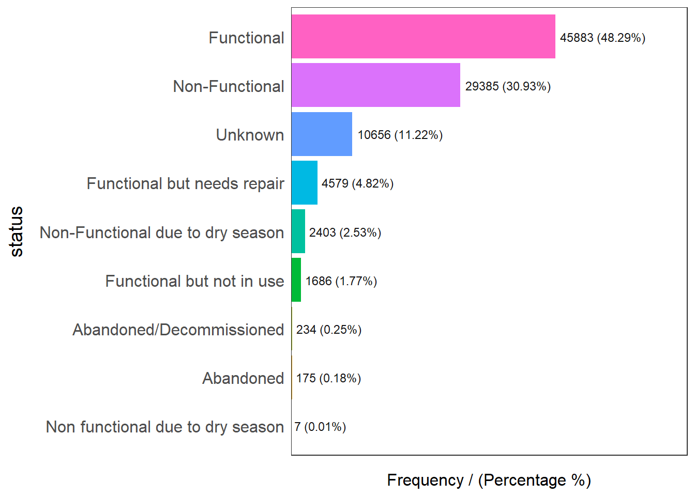

pacman::p_load(here,
sf, tidyverse, dplyr,
funModeling, tmap
)Take Home Ex 2
Overview
Files required for Take Home Ex 2:
Water point attribute data (exported as CSV file):
https://www.waterpointdata.org/access-data/
Click on the button “Access WPdx+ Global Data Repository”
Then click export button & download as CSV file
Nigeria Administrative Level 2 Boundary File:
https://www.geoboundaries.org/
Enter “Nigeria” in the name filter column.
Download Nigeria-NGA-ADM2-2022 under the column “geoBoundaries”
Column Description can be found at:
https://www.waterpointdata.org/wp-content/uploads/2021/04/WPDx_Data_Standard.pdf
Step 1: Importing the required packages
The following packages are imported:
here: We use this to generate a path to the file stored at the root directory
sf: We use this for manipulation of simple features
tmap: We use for thematic plotting
tidyverse (https://www.tidyverse.org/)
ggplot2
dplyr: Used for data manipulation
readr: We use this for reading rectangular data like csv
text
Step 2: Shrinking the CSV file
Since the CSV file is really huge, we need to shrink it down first so we can store a copy of it on github. To do this, we will import the CSV file and then only select the rows that we are keen to keep using the select() function. The CSV will initially be imported as a tibble file format, thereafter once we select our referred columns, we also need to convert geometry coordinate before finally saving it as a rds file.
Using the here() function, we will generate a path to where the large csv file is stored:
csv_path <- here("data", "dataNigeria_2", "waterpoint", "wpdx.csv")
csv_path[1] "D:/f4sared/ISSS624/data/dataNigeria_2/waterpoint/wpdx.csv"We will use the read_csv() of the readr package to ingest the CSV file:
wp_nga <- read_csv(csv_path) %>% filter(`#clean_country_name` == "Nigeria")We will use the select() to keep only columns of interest:
wp_nga_out <- wp_nga %>% select(7:10, 13:14, 22, 46:47, 62)Using st_as_sfc() of the sf package, we derive a new “Geometry” column based on `New Georeferenced Column`. This is because the column is as actually holding data in textual format.
We run the code as follow:
wp_nga_out$Geometry = st_as_sfc(wp_nga_out$`New Georeferenced Column`)Next using st_sf() of the sf package, we will convert the current object to sf dataframe:
wp_nga_out <- st_sf(wp_nga_out, crs=4326) Since the column `New Georeferenced Column` is no longer needed, we exclude it:
wp_nga_out <- wp_nga_out %>% select(1:9, 11)To save the file, we need to generate a save path:
savefile_path <- here("data", "dataNigeria_2", "waterpoint", "wp_nga_v2.rds")
savefile_path[1] "D:/f4sared/ISSS624/data/dataNigeria_2/waterpoint/wp_nga_v2.rds"We then save the dataframe as a rds file:
write_rds(wp_nga_out, savefile_path)Step 3: Loading the data
Load the water point data:
Now, using the read_rds of the readr package, we load the data as follow:
(we will rename all the columns for ease of work)
(we will also replace all N/A values of the status with “Unknown”)
wp_nga <- read_rds(savefile_path) %>%
rename(`status`=`#status_clean`) %>%
rename(`adm1`=`#clean_adm1`) %>%
rename(`adm2`=`#clean_adm2`) %>%
rename(`tech_clean`=`#water_tech_clean`) %>%
rename(`tech_category`=`#water_tech_category`) %>%
mutate(status = replace_na(status, "Unknown")) %>%
mutate(tech_category = replace_na(tech_category, "Unknown")) %>%
mutate(tech_clean = replace_na(tech_clean, "Unknown"))We will now use the st_geometry of the sf package to look at our data info:
st_geometry(wp_nga)Geometry set for 95008 features
Geometry type: POINT
Dimension: XY
Bounding box: xmin: 2.707441 ymin: 4.301812 xmax: 14.21828 ymax: 13.86568
Geodetic CRS: WGS 84
First 5 geometries:POINT (5.12 7.98)POINT (3.597668 6.964532)POINT (7.92972 6.48694)POINT (7.64867 6.72757)POINT (7.66485 6.7799)Load the Geo Boundary data:
Once again, we need to generate the path as follow:
boundary_path <- here("data", "dataNigeria_2", "boundary")
boundary_path[1] "D:/f4sared/ISSS624/data/dataNigeria_2/boundary"Using the st_read() function of the sf package, we will load the boundary file:
nga <- st_read(dsn = boundary_path,
layer = "geoBoundaries-NGA-ADM2",
crs = 4326) %>% select(shapeName)Reading layer `geoBoundaries-NGA-ADM2' from data source
`D:\f4sared\ISSS624\data\dataNigeria_2\boundary' using driver `ESRI Shapefile'
Simple feature collection with 774 features and 5 fields
Geometry type: MULTIPOLYGON
Dimension: XY
Bounding box: xmin: 2.668534 ymin: 4.273007 xmax: 14.67882 ymax: 13.89442
Geodetic CRS: WGS 84Handling Repeated Names
We refer to our classmates’ method:
https://jordan-isss624-geospatial.netlify.app/posts/geo/geospatial_exercise/#data-wrangling
Get the index of the rows that are duplicated
bool_list <- duplicated(nga$shapeName)
duplicated_names <- nga$shapeName[bool_list]
index_rows <- which(nga$shapeName %in% duplicated_names)
index_rows [1] 94 95 304 305 355 356 519 520 546 547 693 694Select rows that are duplicated
dup_rows <- nga %>% filter(nga$shapeName %in% duplicated_names)
dup_rows$shapeName [1] "Bassa" "Bassa" "Ifelodun" "Ifelodun" "Irepodun" "Irepodun"
[7] "Nasarawa" "Nasarawa" "Obi" "Obi" "Surulere" "Surulere"Plot the areas that are duplicated:
tmap_mode("view")
tm_shape(dup_rows) + tm_polygons()Rename the duplicated areas
nga$shapeName[index_rows] <- c("Bassa_1", "Bassa_2",
"Ifelodun_1", "Ifelodun_2",
"Irepodun_1", "Irepodun_2",
"Nasarawa_1", "Nasarawa_2",
"Obi_1", "Obi_2",
"Surulere_1","Surulere_2")Check to see if there are any repeated rows again:
bool_list <- duplicated(nga$shapeName)
duplicated_names <- nga$shapeName[bool_list]
index_rows <- which(nga$shapeName %in% duplicated_names)
index_rowsinteger(0)Step 4: Data Wrangling
Status of water point
Using the freq() from funModeling, we will check the distribution of status of the water points:
freq(data=wp_nga, input = 'status')Warning: The `<scale>` argument of `guides()` cannot be `FALSE`. Use "none" instead as
of ggplot2 3.3.4.
ℹ The deprecated feature was likely used in the funModeling package.
Please report the issue at <https://github.com/pablo14/funModeling/issues>.
status frequency percentage cumulative_perc
1 Functional 45883 48.29 48.29
2 Non-Functional 29385 30.93 79.22
3 Unknown 10656 11.22 90.44
4 Functional but needs repair 4579 4.82 95.26
5 Non-Functional due to dry season 2403 2.53 97.79
6 Functional but not in use 1686 1.77 99.56
7 Abandoned/Decommissioned 234 0.25 99.81
8 Abandoned 175 0.18 99.99
9 Non functional due to dry season 7 0.01 100.00Functional water point
wpt_functional <- wp_nga %>%
filter(status %in%
c("Functional",
"Functional but not in use",
"Functional but needs repair"))freq(data=wpt_functional,
input = 'status')Non Functional water point
wpt_nonfunctional <- wp_nga %>%
filter(status %in%
c("Abandoned/Decommissioned",
"Abandoned",
"Non-Functional",
"Non functional due to dry season",
"Non-Functional due to dry season"))freq(data=wpt_nonfunctional,
input = 'status')Unknown
wpt_unknown <- wp_nga %>% filter(status == "Unknown")Water point Technology
wpt_hand_pump <- wp_nga %>% filter(tech_category == "Hand Pump")freq(data=wp_nga, input = 'tech_category')Usage Capacity
wpt_less_1000 <- wp_nga %>% filter(usage_capacity < 1000)freq(data=wp_nga, input = 'usage_capacity')Rural waterpoints
wpt_rural <- wp_nga %>% filter(is_urban == FALSE)freq(data=wp_nga, input = 'is_urban')Point-in-Polygon
Point in polygon
nga_wp <- nga %>%
mutate(`total_wpt` = lengths(
st_intersects(nga, wp_nga))) %>%
mutate(`wpt_functional` = lengths(
st_intersects(nga, wpt_functional))) %>%
mutate(`wpt_non_functional` = lengths(
st_intersects(nga, wpt_nonfunctional))) %>%
mutate(`wpt_unknown` = lengths(
st_intersects(nga, wpt_unknown))) %>%
mutate(`wpt_hand_pump` = lengths(
st_intersects(nga, wpt_hand_pump))) %>%
mutate(`wpt_less_1000` = lengths(
st_intersects(nga, wpt_less_1000))) %>%
mutate(`wpt_rural` = lengths(
st_intersects(nga, wpt_rural))) Calculate Percentage
nga_wp <- nga_wp %>%
mutate(pct_functional = `wpt_functional`/`total_wpt`) %>%
mutate(`pct_non_functional` = `wpt_non_functional`/`total_wpt`) %>%
mutate(`pct_hand_pump` = `wpt_hand_pump`/`total_wpt`) %>%
mutate(`pct_less_1000` = `wpt_less_1000`/`total_wpt`) %>%
mutate(`pct_rural` = `wpt_rural`/`total_wpt`)Replace NaN with 0
NaN_list <- is.nan(nga_wp$pct_functional)
nga_wp$pct_functional[NaN_list] <- 0
NaN_list <- is.nan(nga_wp$pct_non_functional)
nga_wp$pct_non_functional[NaN_list] <- 0
NaN_list <- is.nan(nga_wp$pct_hand_pump)
nga_wp$pct_hand_pump[NaN_list] <- 0
NaN_list <- is.nan(nga_wp$pct_hand_pump)
nga_wp$pct_hand_pump[NaN_list] <- 0
NaN_list <- is.nan(nga_wp$pct_less_1000)
nga_wp$pct_less_1000[NaN_list] <- 0
NaN_list <- is.nan(nga_wp$pct_rural)
nga_wp$pct_rural[NaN_list] <- 0qtm(nga_wp, fill = "wpt hand pump") +
tm_layout(legend.height = 0.4,legend.width = 0.4)